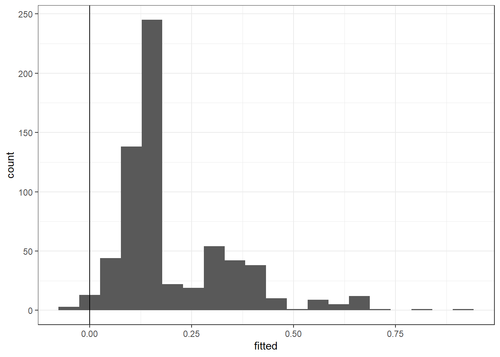

2 MLE and hypothesis testing
rm(list=ls())
library(dplyr)
D<-read.csv("Data/NFLFieldGoals1920scrape.csv") %>% data.frame()
D %>% head() %>% knitr::kable()| X | Rk | Date | Tm | Opp | Result | Player | Dist | Good. | Blk. | Y | B | year | month | season |
|---|---|---|---|---|---|---|---|---|---|---|---|---|---|---|
| 2 | 1 | 2019-12-29 | ARI | LAR | L 24-31 | Zane Gonzalez | 31 | Y | N | 1 | 0 | 2019 | 12 | 2019 |
| 3 | 2 | 2019-12-22 | ARI | SEA | W 27-13 | Zane Gonzalez | 46 | Y | N | 1 | 0 | 2019 | 12 | 2019 |
| 4 | 3 | 2019-12-22 | ARI | SEA | W 27-13 | Zane Gonzalez | 22 | Y | N | 1 | 0 | 2019 | 12 | 2019 |
| 5 | 4 | 2019-12-22 | ARI | SEA | W 27-13 | Zane Gonzalez | 45 | N | Y | 0 | 1 | 2019 | 12 | 2019 |
| 6 | 5 | 2019-12-15 | ARI | CLE | W 38-24 | Zane Gonzalez | 21 | Y | N | 1 | 0 | 2019 | 12 | 2019 |
| 7 | 6 | 2019-12-08 | ARI | PIT | L 17-23 | Zane Gonzalez | 30 | Y | N | 1 | 0 | 2019 | 12 | 2019 |

Not so useful
DSummary<-(D
%>% group_by(Dist)
%>% summarize(
Y = mean(Y),
n = n()
)
)
(
ggplot(DSummary)
+geom_point(alpha=0.7,aes(x=Dist,y=Y,size=n))
+geom_smooth(data=D,aes(x=Dist,y=Y,color="probit-linear"),method="glm", method.args=list(family=binomial(link="probit")),size=1,formula = "y~x")
+geom_smooth(data=D,aes(x=Dist,y=Y,color="probit-quadratic"),method="glm", method.args=list(family=binomial(link="probit")),size=1,formula = "y~x+I(x^2)")
+stat_ecdf(data=D,aes(x=Dist))
+theme_bw()
)
library(stargazer)
m1<-glm(data=D,Y~1,family=binomial(link="probit"))
m2<-glm(data=D,Y~Dist,family=binomial(link="probit"))
m3<-glm(data=D,Y~Dist+ I(Dist^2),family=binomial(link="probit"))
stargazer(m1,m2,m3,type="html")| Dependent variable: | |||
| Y | |||
| (1) | (2) | (3) | |
| Dist | -0.070*** | -0.188*** | |
| (0.006) | (0.056) | ||
| I(Dist2) | 0.001** | ||
| (0.001) | |||
| Constant | 0.909*** | 3.792*** | 6.159*** |
| (0.046) | (0.263) | (1.171) | |
| Observations | 1,018 | 1,018 | 1,018 |
| Log Likelihood | -482.537 | -397.490 | -395.069 |
| Akaike Inf. Crit. | 967.074 | 798.981 | 796.138 |
| Note: | p<0.1; p<0.05; p<0.01 | ||
Likelihood ratio test: \[ H_0: \ \text{distance does not affect accuracy},\quad H_A:\ \text{distance affects accuracy}\\ H_0:\ \beta_\text{Dist}=0,\quad \beta_\text{Dist}\neq0 \]
In general: \[ 2(LL_U-LL_R)\xrightarrow[]{d}\chi^2(r) \] where \(r\) is the number of restrictions \(H_0\) imposes. Note that if \(X\sim N(0,1)\) then \(X^2\sim \chi^2(1)\), and in general \(\sum_{k=1}^K X^2_k \sim \chi^2(K)\)
- Compare models 1 and 2: \[ H_0:\ \Pr(Y=1)=\Phi(\beta_0),\quad H_A:\ \Pr(Y=1\mid D) =\Phi(\beta_0+\beta_1D) \]
## 'log Lik.' 170.0936 (df=2)## [1] "Critical Value 3.84145882069412"- Compare models 1 and 3: \[ H_0:\ \Pr(Y=1)=\Phi(\beta_0),\quad H_A:\ \Pr(Y=1\mid D) =\Phi(\beta_0+\beta_1D+\beta_2D^2) \]
## 'log Lik.' 174.9362 (df=3)## [1] "Critical Value 5.99146454710798"- Compare models 2 and 3: \[ H_0:\ \Pr(Y=1)=\Phi(\beta_0+\beta_1D),\quad H_A:\ \Pr(Y=1\mid D) =\Phi(\beta_0+\beta_1D+\beta_2D^2) \]
## 'log Lik.' 4.842615 (df=3)## [1] "Critical Value 3.84145882069412"